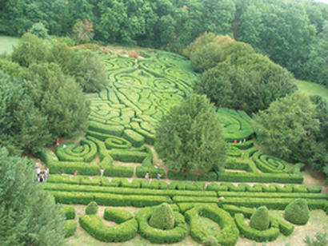
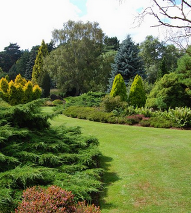

A kertépítés története

A kertészkedés nagyjából i.e. 10 000 környékén kezdődött meg, amikor az újkőkorszak kezdetén az ember megkezdte kialakítani a haszonállatok, s ezzel párhuzamosan a haszonnövények körét. A neolitikus kultúra Elő-Ázsiában, a mai Irán területén jelent meg, és innen terjedt tovább keletre és nyugatra.
Európa területén először Krétán, a mai Görögország, valamint Olaszország területén építették meg az első kerteket, majd a rómaiak terjesztették tovább Európa egyéb részeibe. Az ókori görög kertek sokkal kevésbé hivalkodóak voltak, mint a Mezopotámiában épített függőkertek, ugyanakkor jóval szorosabban kapcsolódtak a valláshoz.
Kert

A kert haszon- vagy dísznövények termesztésére szolgáló, rendesen bekerített terület. A be nem kerített - általában gyümölcsfákat és gyümölcsöt termő cserjéket tartalmazókat - vadkerteknek nevezzük. Vannak haszonkertek: gyümölcsösök, konyhakertek, faiskolák és kereskedelmi kertek; díszkertek: házi, virágos és rózsakertek és parkok; tudományos kertek: füvészeti, fatenyésztési, gyümölcsészeti, szőlészeti és iskolakertek.
Jogi értelemben a kert a termőföld egyik művelési ága, ahol szőlővel, zöldségfélékkel, virág-, vagy dísznövénnyel, gyümölcsfával vegyesen hasznosított területen gazdálkodnak. A kert művelési ágához sorolják még a fóliasátrakat, a melegágyakat, a palántanevelő telepeket, a csemetekerteket, a komlóültetvényeket, illetve a karácsonyfa, díszítőgally, vadgyümölcs, vessző termelést, illetve az erdészeti szaporítóanyagokat termelő területeket is.
Tudományos kertek
A tudományos kertekben tudományos, pl. mint növénybonctani, morfológiai, fiziológiai, honosítási, tenyészkísérleti, stb. célokra szükséges növényeket termesztenek, s azért az ily kertek a különböző céloknak megfelelően vannak berendezve. Füvészeti (botanikai) kertekben együtt találjuk az összes növénycsalád képviselőit; dendrológiai kertekben csak fákat és cserjéket találunk; gyümölcsösökben csak gyümölcsfákat és gyümölcscserjéket; szőlészeti kertek csak a szőlőtermelés számára szolgáltatnak anyagot. Iskolakertek a kertészet elemeiben való oktatásra szolgálnak.
Faiskolák
Faiskolákban különböző gyümölcs- és díszfát, valamint cserjéket nevelünk. Vannak olyanok, amelyekben mindenféle fát és cserjét nevelnek és olyanok, melyekben csak egyes fajokat, pl. rózsákat, toboztermőket (koniferák), stb. termesztenek. Minthogy különösen az utóbbi faiskolákban a talaj nagyon hamar kimerül, az egész területet úgy osztjuk be, hogy az illető fa- és cserjeféléket bizonyos időközökben más terményekkel váltjuk fel, amit már a faiskola berendezésénél szem előtt kell tartanunk.